Generates a plot of Positive Predictive Value (PPV) and Negative Predictive Value (NPV) across a range of disease prevalences. This plot helps in understanding how the PPV and NPV of a diagnostic test vary with the prevalence of the condition.
Details
The Predictive Value Plot visualizes how the Positive Predictive Value (PPV) and Negative Predictive Value (NPV) of a test change with varying disease prevalence. Typically, as prevalence increases, PPV increases while NPV decreases. This is because when a disease is more common (higher prevalence), a positive test result is more likely to be a true positive, thus increasing the PPV. Conversely, when the disease is less common (lower prevalence), a negative test result is more likely to be a true negative, increasing the NPV.
The impact of prevalence on PPV and NPV is a fundamental concept in medical testing, where understanding the population's disease prevalence is crucial in interpreting test results. For rare conditions, even tests with high sensitivity and specificity can have a low PPV, meaning that most positive results are false positives. Similarly, for very common conditions, the NPV can decrease, indicating that negative results become less reliable. This plot helps in visualizing these relationships and is a valuable tool in the evaluation of diagnostic tests, allowing healthcare professionals and researchers to anticipate how well a test will perform in different scenarios.
Examples
dx_obj <- dx(
data = dx_heart_failure,
true_varname = "truth",
pred_varname = "predicted",
outcome_label = "Heart Attack",
setthreshold = .3
)
dx_plot_predictive_value(dx_obj)
